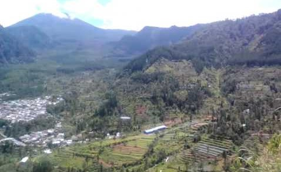

Untuk menuju Bukit Bintang, gunakan jalur ke arah Mentik atau dari SD N 2 Guci. Kemudian kita hanya bisa berjalan kaki sekitar 10 menit melewati perkebunan warga dari lokasi parkir kendaraan. Cukup sulit karena tanahnya cukup labil. Sehingga disarankan melakukan perjalanan ketika hari masih terang.

Jika ingin melakukan camping di tempat ini, pastikan untuk melakukan ijin kepada penduduk sekitar. Tidak ada fasilitas umum yang tersedia, bahkan sumber air pun cukup jauh. Suhu di tempat ini cukup dingin, terutama setelah pukul 4 pagi, suhu bisa mencapai 20 C. Sehingga pastikan untuk mempersiapkan jaket yang cukup tebal. Namun suhu sedingin itu tidak akan terasa ketika kita melihat sunrise dan Gunung Slamet di pagi hari. Sebagai informasi, Bukit Bintang ini tanahnya datar sehingga bisa menampung sekitar 40-an orang.
Meskipun tempat ini belum banyak yang tau, jangan sampai tempat ini dikotori oleh tangan-tangan yang tidak bertanggungjawab. Seperti membuang sampah sembarangan atau merusak alam